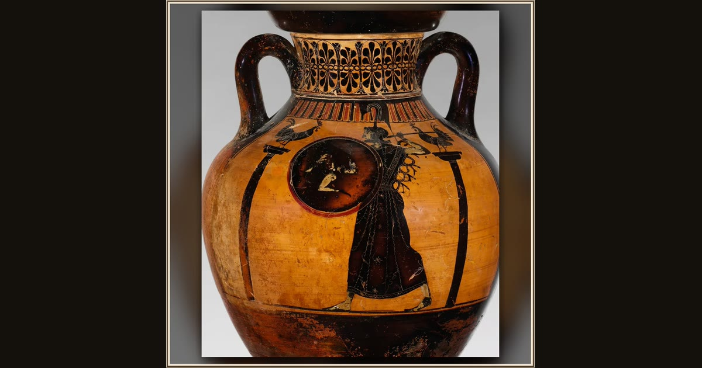

Terracotta Panathenaic prize amphora
Attributed to the Leagros Group · ca. 510 BCE · met
On this Athenian prize amphora Athena strides forward in helmet and aegis, shield raised and spear poised, the armed goddess the hymn shows springing from the head of Zeus (8). Explore its place in Homer's The Homeric Hymns, Hymn 28 · To Athena, line 8.